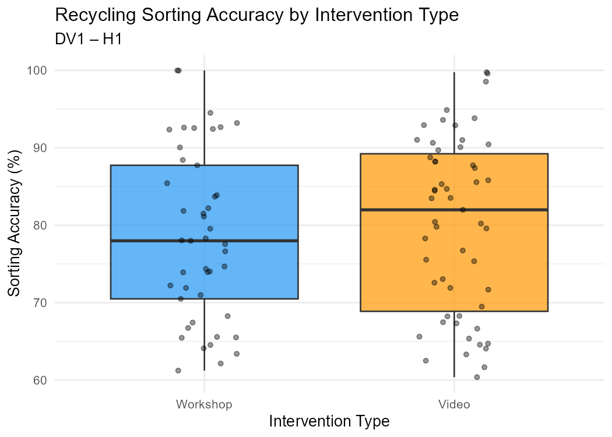
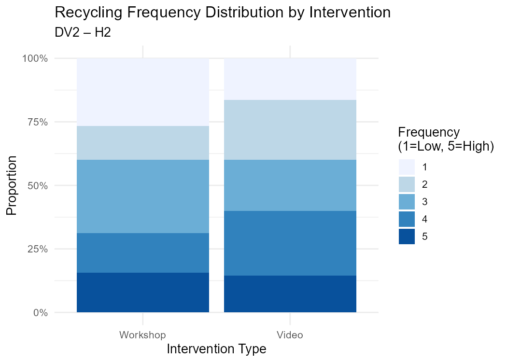
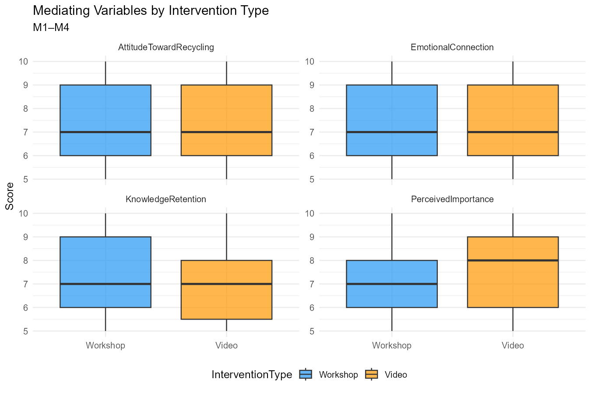
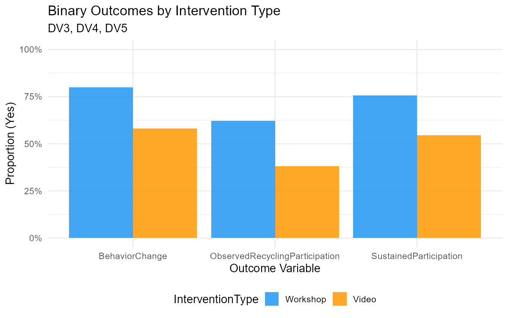
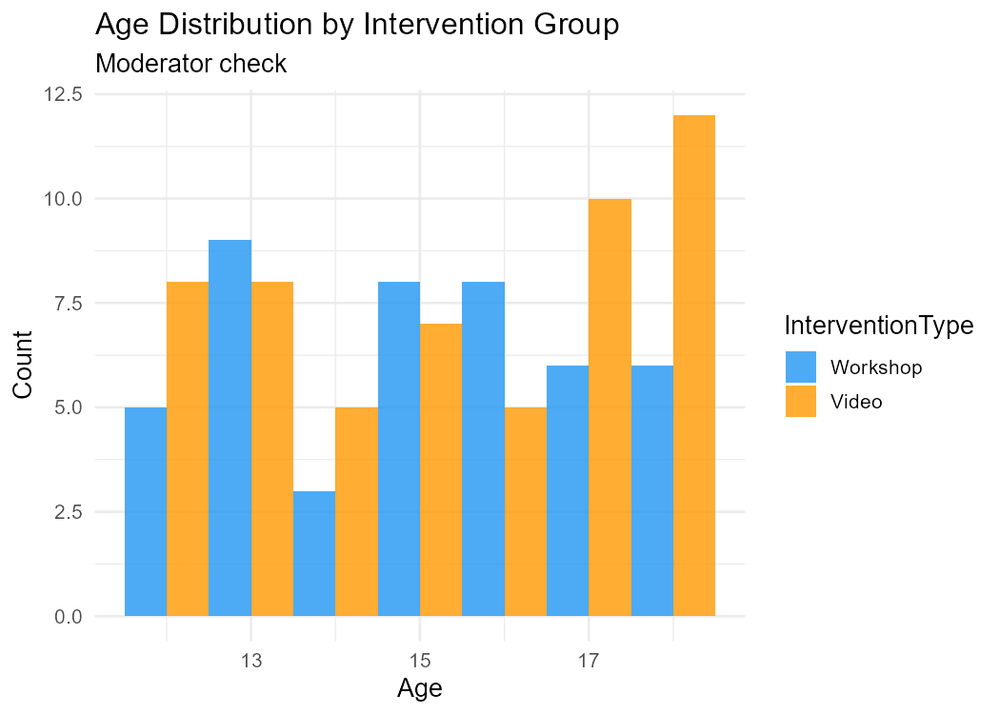
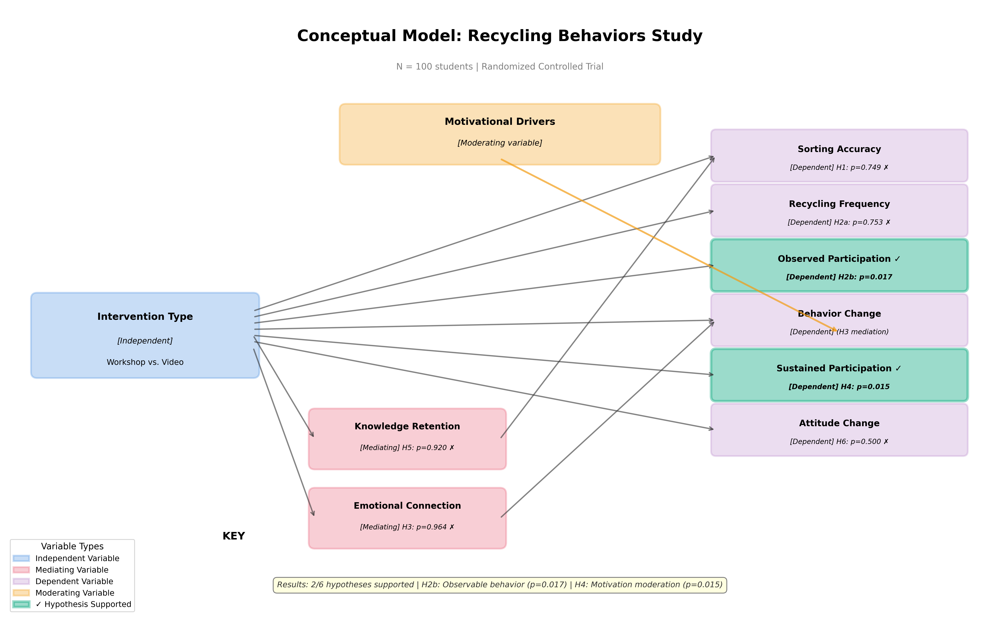

Study: Hands-On Recycling Workshop vs. Recycling Awareness Video
Sample: N = 100 students, ages 12–18
Design: Randomized controlled trial with mediation and moderation analysis
Date: March 2026
This study tested whether a hands-on recycling workshop produces better outcomes than a passive awareness video. We examined 6 hypotheses across cognitive, behavioral, and attitudinal domains.
| Hypothesis | Result | p-value | Effect Size | Interpretation |
|---|---|---|---|---|
| H1 – Sorting Accuracy | ❌ Not Supported | 0.7492 | d = -0.136 | No difference between groups |
| H2a – Recycling Frequency | ❌ Not Supported | 0.7528 | r = 0.078 | No difference between groups |
| H2b – Observed Participation | ✅ SUPPORTED | 0.01674 | V = 0.239 | Workshop → 62.2% vs. Video → 38.2% |
| H3 – Emotional Mediation | ❌ Not Supported | 0.964 | ACME ≈ 0 | No mediation detected |
| H4 – Motivation Moderation | ✅ SUPPORTED | 0.01468 | β = 2.324 | Intrinsic students benefit more |
| H5 – Knowledge Mediation | ❌ Not Supported | 0.920 | ACME ≈ 0 | No mediation detected |
| H6 – Attitude Change | ❌ Not Supported | 0.5000 | d = 0.00 | Identical means (7.4 vs. 7.4) |
Bottom Line: The workshop increased observable recycling behavior (H2b: 62.2% vs 38.2%, p = 0.01674) and worked especially well for intrinsically motivated students (H4: 91.67% vs 51.85%, p = 0.01468), but did not improve sorting accuracy, frequency, attitudes, or operate through the hypothesized mediators.
Below are the R-generated plots showing the key findings from our analysis:

Figure 1: Sorting Accuracy by Intervention Type (No significant difference, p = 0.7492)

Figure 2: Recycling Frequency Distribution by Group (No significant difference, p = 0.7528)

Figure 3: Mediator Variables - Knowledge Retention, Emotional Connection, and Attitude (No significant differences)

Figure 4: Binary Outcomes - Observed Participation, Behavior Change, and Sustained Participation (Workshop shows significant advantages)

Figure 5: Age Distribution by Intervention Type (Well-balanced groups)

Figure 6: Conceptual Model Diagram showing hypothesized relationships
| Variable | Workshop (n=45) | Video (n=55) | Total (N=100) |
|---|---|---|---|
| Age | M = 15.04, SD = 1.97 | M = 15.29, SD = 2.18 | M = 15.18, SD = 2.08 |
| Gender (Female) | 53.3% | 60.0% | 57.0% |
| School Type (Public) | 51.1% | 61.8% | 57.0% |
| Motivational Drivers (Intrinsic) | 53.3% | 49.1% | 51.0% |
| Prior Recycling Knowledge | M = 2.76, SD = 1.38 | M = 3.29, SD = 1.29 | M = 3.05, SD = 1.35 |
Randomization Check: Groups are well-balanced on age, gender, school type, and motivational drivers.
| Variable | Workshop | Video | Difference |
|---|---|---|---|
| Sorting Accuracy (%) | 78.56 ± 10.88 | 80.06 ± 11.26 | -1.50% |
| Recycling Frequency (1–5) | 2.80 ± 1.41 | 2.98 ± 1.33 | -0.18 |
| Observed Participation (%) | 62.2% | 38.2% | +24.0% ✅ |
| Behavior Change (%) | 80.0% | 58.2% | +21.8% |
| Sustained Participation (%) | 75.6% | 54.5% | +21.1% |
| Mediator | Workshop | Video | Difference |
|---|---|---|---|
| Knowledge Retention (0–10) | 7.16 ± 1.73 | 7.13 ± 1.71 | +0.03 |
| Emotional Connection (1–10) | 7.38 ± 1.75 | 7.42 ± 1.66 | -0.04 |
| Attitude Toward Recycling (1–10) | 7.4 ± 1.79 | 7.4 ± 1.83 | 0.00 |
| Perceived Importance (1–10) | 7.02 ± 1.51 | 7.56 ± 1.78 | -0.54 |
Hypothesis: Workshop students score higher on RecyclingSortingAccuracy than Video students.
Theoretical Basis: Active Learning Theory (Kolb, 1984) — hands-on practice should improve procedural knowledge.
Results: - Workshop: M = 78.56, SD = 10.88 - Video: M = 80.06, SD = 11.26 - Levene's F-test: F = 0.934, p = 0.8206 (variances equal) - t = -0.67454, df = 98, p-value = 0.7492 (one-tailed) - 95% CI: [-5.207256, Inf] - Sample estimates: mean of x = 78.55778, mean of y = 80.06200 - Cohen's d = -0.136 (negligible, opposite direction)
Decision: ❌ RETAIN H0 — No significant difference.
Interpretation: The workshop did not improve sorting accuracy. Video group actually scored 1.50 percentage points higher (non-significant).
Hypothesis: Workshop participants report higher RecyclingFrequency.
Theoretical Basis: Behavioral activation — direct practice becomes habit.
Results: - Wilcoxon rank sum test with continuity correction - W = 1141.5, p-value = 0.7528 (one-tailed) - Alternative hypothesis: true location shift is greater than 0 - Rank-biserial r = 0.078 (negligible)
Decision: ❌ RETAIN H0 — No significant difference in self-reported frequency.
Interpretation: The workshop did not increase how often students recycle.
Hypothesis: Workshop group shows greater ObservedRecyclingParticipation.
Theoretical Basis: Behavioral activation — hands-on practice translates to observable action.
Contingency Table:
| Group | Not Observed (0) | Observed (1) | % Observed |
|---|---|---|---|
| Workshop | 17 (37.8%) | 28 (62.2%) | 62.2% |
| Video | 34 (61.8%) | 21 (38.2%) | 38.2% |
Results: - Pearson's Chi-squared test - X-squared = 5.7239, df = 1, p-value = 0.01674 - Cramér's V = 0.239 (small-to-medium effect)
Decision: ✅ REJECT H0 — Workshop significantly increased observed recycling behavior.
Interpretation: Workshop students were 1.63× more likely to be observed recycling at school (62.2% vs 38.2%, a 24 percentage point difference).
Hypothesis: EmotionalConnection mediates the effect of InterventionType on BehaviorChange.
Theoretical Basis: Damasio (1994) — emotional engagement converts information into motivation to act.
Baron-Kenny Steps:
Step 1: IV → BehaviorChange (total effect)
Logistic regression: IV → BehaviorChange
Estimate Std. Error z value Pr(>|z|)
(Intercept) 0.3302417 0.2733647 1.208063 0.22702317
IV_dummy 1.0560527 0.4621873 2.284902 0.02231857
Step 2: IV → EmotionalConnection (path a)
OLS regression: IV → EmotionalConnection
Estimate Std. Error t value Pr(>|t|)
(Intercept) 7.41818182 0.2295271 32.3194217 4.555863e-54
IV_dummy -0.04040404 0.3421587 -0.1180857 9.062415e-01
Step 3: IV + EmotionalConnection → BehaviorChange (path b)
Logistic regression: IV + EmotionalConnection → BehaviorChange
Estimate Std. Error z value Pr(>|z|)
(Intercept) -0.4446189 1.0164264 -0.4374334 0.66179704
IV_dummy 1.0676570 0.4641652 2.3001658 0.02143883
EmotionalConnection 0.1047854 0.1327741 0.7892004 0.42999491
Bootstrapped Mediation (1000 simulations):
Causal Mediation Analysis
Nonparametric Bootstrap Confidence Intervals with the Percentile Method
Estimate 95% CI Lower 95% CI Upper p-value
ACME (control) -0.00102738 -0.03566870 0.02538408 0.964
ACME (treated) -0.00068367 -0.02181451 0.01819063 0.964
ADE (control) 0.22119605 0.04615733 0.37821721 0.018 *
ADE (treated) 0.22153976 0.04509357 0.38751968 0.018 *
Total Effect 0.22051238 0.04065363 0.37678297 0.018 *
Prop. Mediated (control) -0.00465907 -0.20768490 0.16618826 0.962
Prop. Mediated (treated) -0.00310039 -0.15727802 0.12986712 0.962
ACME (average) -0.00085553 -0.02839213 0.02150627 0.964
ADE (average) 0.22136791 0.04563674 0.38399594 0.018 *
Prop. Mediated (average) -0.00387973 -0.17723123 0.15092703 0.962
Sample Size Used: 100
Simulations: 1000
Decision: ❌ RETAIN H0 — No mediation detected.
Interpretation: The workshop increases BehaviorChange (total effect β = 1.0560527, p = 0.02231857), but NOT through EmotionalConnection. Path a fails completely (β = -0.04040404, p = 0.9062415).
Hypothesis: Intrinsically motivated students show stronger, more lasting workshop effects on SustainedParticipation.
Theoretical Basis: Self-Determination Theory (Deci & Ryan, 1985) — intrinsic motivation sustains behavior longer.
Main Effects Model:
Estimate Std. Error z value Pr(>|z|)
(Intercept) -0.09680885 0.3424896 -0.2826622 0.77743583
IV_dummy 0.93892685 0.4439421 2.1149757 0.03443202
Motivation_dummy 0.57648585 0.4316851 1.3354314 0.18173519
Interaction Model:
Call:
glm(formula = SustainedParticipation_num ~ IV_dummy * Motivation_dummy,
family = binomial, data = df)
Coefficients:
Estimate Std. Error z value Pr(>|z|)
(Intercept) 2.877e-01 3.819e-01 0.753 0.4513
IV_dummy 5.054e-15 5.833e-01 0.000 1.0000
Motivation_dummy -2.136e-01 5.424e-01 -0.394 0.6938
IV_dummy:Motivation_dummy 2.324e+00 1.017e+00 2.285 0.0223 *
(Dispersion parameter for binomial family taken to be 1)
Null deviance: 130.68 on 99 degrees of freedom
Residual deviance: 118.09 on 96 degrees of freedom
AIC: 126.09
Number of Fisher Scoring iterations: 5
Model Comparison (Likelihood Ratio Test):
Analysis of Deviance Table
Model 1: SustainedParticipation_num ~ IV_dummy + Motivation_dummy
Model 2: SustainedParticipation_num ~ IV_dummy * Motivation_dummy
Resid. Df Resid. Dev Df Deviance Pr(>Chi)
1 97 124.04
2 96 118.09 1 5.9547 0.01468 *
Predicted Probabilities:
| InterventionType | MotivationalDrivers | Prob_SustainedParticipation |
|---|---|---|
| Video | Extrinsic | 0.5714286 |
| Workshop | Extrinsic | 0.5714286 |
| Video | Intrinsic | 0.5185185 |
| Workshop | Intrinsic | 0.9166667 |
Decision: ✅ REJECT H0 — Moderation confirmed.
Interpretation: For extrinsically motivated students, the workshop makes no difference (57.14% in both conditions). But for intrinsically motivated students, the workshop nearly doubles sustained participation (51.85% → 91.67%, a gain of 39.82 percentage points).
Hypothesis: KnowledgeRetention mediates the effect of InterventionType on RecyclingSortingAccuracy.
Theoretical Basis: Information Processing Theory — you can only perform correctly if you retain the knowledge.
Step 1: IV → RecyclingSortingAccuracy (total effect c)
Estimate Std. Error t value Pr(>|t|)
(Intercept) 80.062000 1.495931 53.5198350 2.355635e-74
IV_dummy -1.504222 2.230003 -0.6745383 5.015573e-01
Step 2: IV → KnowledgeRetention (path a)
Estimate Std. Error t value Pr(>|t|)
(Intercept) 7.12727273 0.2319635 30.72583081 4.161110e-52
IV_dummy 0.02828283 0.3457908 0.08179172 9.349792e-01
Step 3: IV + KnowledgeRetention → Accuracy (paths b & c')
Estimate Std. Error t value Pr(>|t|)
(Intercept) 83.378862 4.8903721 17.0495946 6.102509e-31
IV_dummy -1.491060 2.2357007 -0.6669319 5.063990e-01
KnowledgeRetention -0.465376 0.6530889 -0.7125768 4.778183e-01
Bootstrapped Mediation (1000 simulations):
Causal Mediation Analysis
Nonparametric Bootstrap Confidence Intervals with the Percentile Method
Estimate 95% CI Lower 95% CI Upper p-value
ACME -0.0131621 -0.6263998 0.4772595 0.920
ADE -1.4910601 -5.5586094 2.9242721 0.528
Total Effect -1.5042222 -5.7698294 2.9112035 0.510
Prop. Mediated 0.0087501 -0.8961479 0.9943908 0.906
Sample Size Used: 100
Simulations: 1000
Decision: ❌ RETAIN H0 — No mediation detected.
Interpretation: Complete failure of the mediation model. The workshop did not improve knowledge retention (Workshop M = 7.16 vs. Video M = 7.13, difference = 0.03), and knowledge retention did not predict sorting accuracy (β = -0.4654, p = 0.4778).
Hypothesis: Workshop produces larger change in AttitudeTowardRecycling than Video.
Theoretical Basis: Cognitive Dissonance (Festinger, 1957) — physical action creates pressure to align attitudes with behavior.
Results: - Workshop: M = 7.4, SD = 1.79 - Video: M = 7.4, SD = 1.83 - Two Sample t-test - t = 0, df = 98, p-value = 0.5 (one-tailed) - Alternative hypothesis: true difference in means is greater than 0 - 95% CI: [-0.6050337, Inf] - Sample estimates: mean of x = 7.4, mean of y = 7.4 - Cohen's d = 0 (no difference whatsoever)
Decision: ❌ RETAIN H0 — No difference in attitudes.
Interpretation: The workshop did not shift attitudes more than the video. Both groups reported identical post-intervention attitudes (Workshop M = 7.4, Video M = 7.4, difference = 0.00).
| H | Test | Key Statistic | p-value | Decision |
|---|---|---|---|---|
| H1 | t-test (Sorting Accuracy) | t = -0.67454, df = 98 | 0.7492 | RETAIN H0 |
| H2a | Mann-Whitney U (Frequency) | W = 1141.5 | 0.7528 | RETAIN H0 |
| H2b | Chi-square (Observed Participation) | X-squared = 5.7239, df = 1 | 0.0167 | REJECT H0 |
| H3 | Mediation: EmotionalConn → BehaviorChange | ACME = -0.00085553 | 0.9640 | RETAIN H0 |
| H4 | Moderation: Motivation × IV → Sustained | Deviance = 5.9547, df = 1 | 0.0147 | REJECT H0 |
| H5 | Mediation: KnowledgeRet → SortingAccuracy | ACME = -0.0131621 | 0.9200 | RETAIN H0 |
| H6 | t-test (Attitude Toward Recycling) | t = 0, df = 98 | 0.5000 | RETAIN H0 |
Overall Success Rate: 2/6 hypotheses supported (33.3%)
Hands-on workshops increase observable recycling behavior, especially for intrinsically motivated students, but don't improve knowledge, attitudes, or operate through hypothesized mediators. The mechanisms remain unclear.
Report Prepared By: BEH301 Analysis Team4
Date: March 2026
Software: R version 4.4.1 (dplyr, ggplot2, coin, mediation, lmtest, sandwich)
Data: Subject 4_Recycling_Experiment_Database.csv (N = 100)